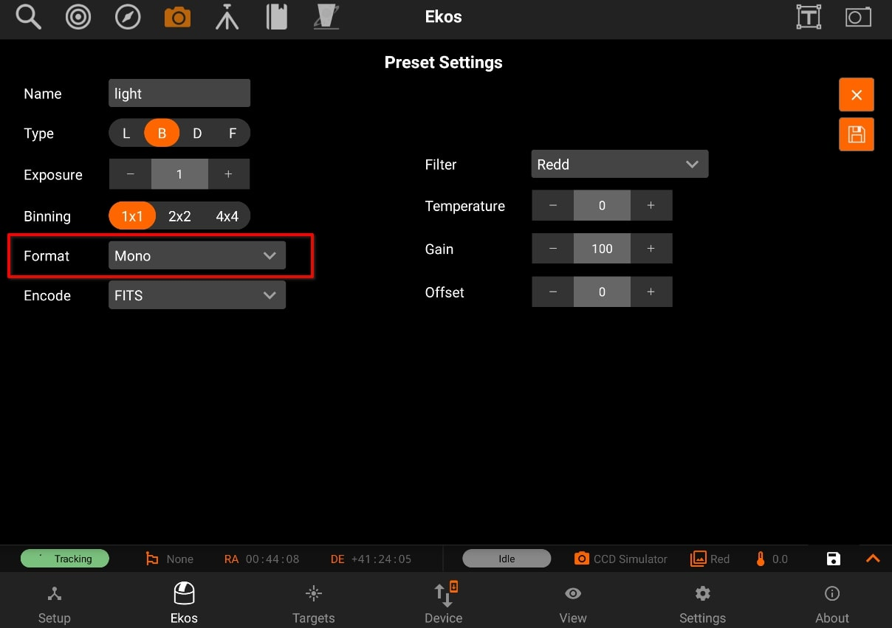
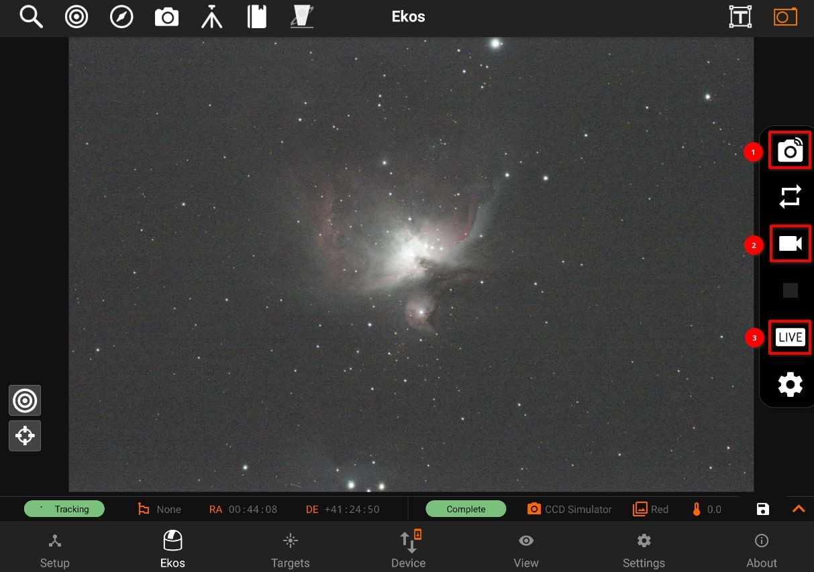
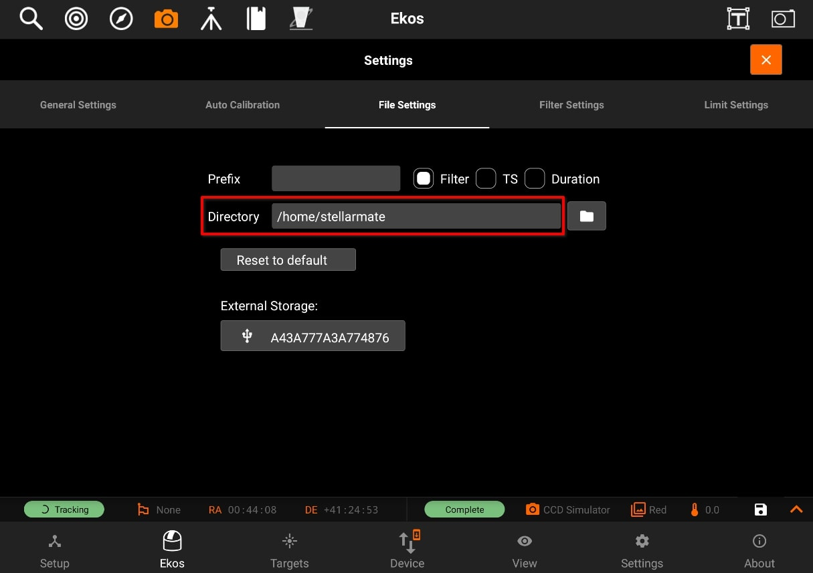
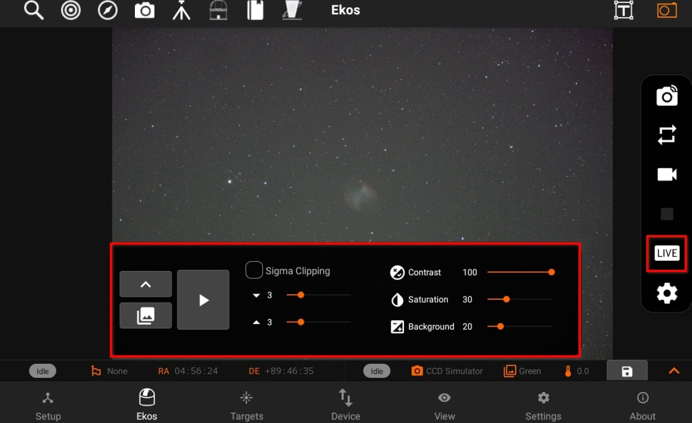
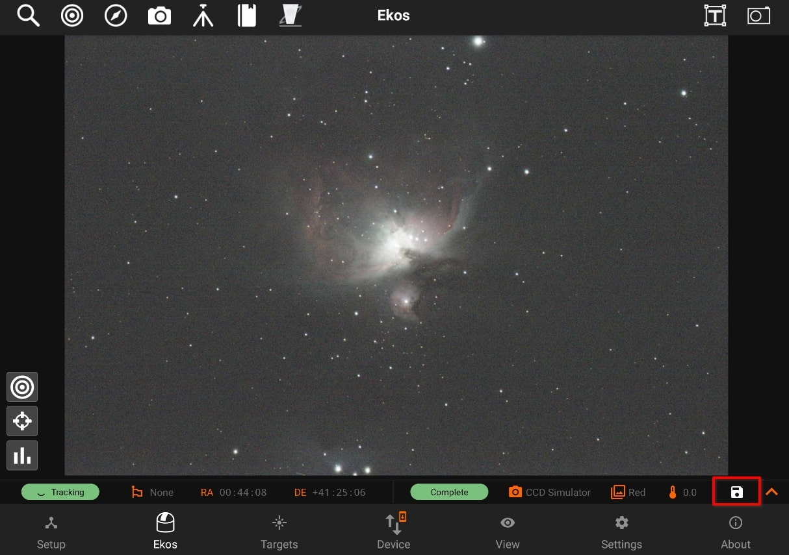
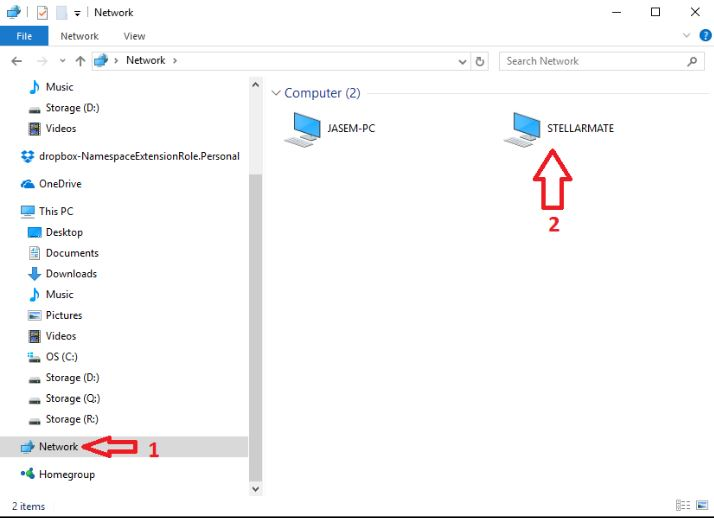
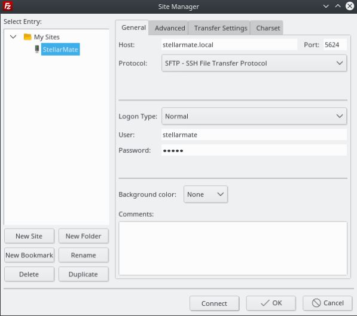

Data Storage
Formats

By default, all captured images are saved as FITS (Flexible Image Transport System) files. FITS is the standard image format for astronomical images and is supported by all astronomical image processing software. For DSLR cameras, saving RAW images directly (e.g. CR2) is also supported by editing the DSLR camera capture preset.
Depending on the camera settings and support, images can be captured as Mono, RAW, or RGB.
- Mono:
Monochromatic single channel images store only intensity information in either 8bit or 16bit. Camera sensors generating 10bit or 12bit data are stored as 16bit by padding zeros, they are not up-scaled or modified.
- RAW:
Color cameras with a Bayer filter often support RAW8 or RAW16 formats. The bayer pattern (e.g. RGGB) depends on the camera model. StellarMate saves the RAW images as is, but debayers them for display purposes. RAW format is the recommended format for color cameras.
- RGB:
Color cameras can export a three channel RGB24 (8 bit per channel) or RGB48 (16 bit per channel) if supported by the camera sensors. Usually, the RGB output is generated by an internal debayer mechanism in the camera firmware. Files tend to be larger in size compared to RAW images but do not require any debayering.
Capture modes:

- Previews
Preview images captured using Quick Camera Control are not saved to the internal StellarMate storage.
- Sequences
- Sequence images captured in the Capture Module are saved to default storage location on StellarMate internal storage. The default full directory path is /home/stellarmate/Pictures.
- The Pictures directory can be changed in the Capture Module File Settings. If an external storage (e.g. SSD) is detected, you can select it as the default storage location.

- All sequence images are saved along with their metadata and can be viewed in the View tab.
- Live Stacking

- Live Stacked images are automatically saved to /home/stellarmate/Pictures/livestacking and are also available in the View tab.
- If a sequence is already in progress, then live stacking starts when the next sequence image is captured. When no sequences are in progress, StellarMate starts capturing images continuously (looping) as per the settings in the Camera Quick Settings.
- After each image is captured, it is then live-stacked and the generated output is displayed sequentially in the thumbnail carousel.
4. Video
If supported by the camera, video streams can be saved to the internal storage by clicking on the Video icon in Camera Quick Control. By default, video files are stored under /home/stellarmate/indi_D where D designates the date.
- SER
Save streaming images in SER lossless format. Beware that this can consume storage space very quickly. To view the video, you need to export the SER video file to a PC/Mac and open it using an SER player.
- OGV
Ogg Theora is a free and open lossy video compression format that sacrifices image quality to decrease storage space. To view the video, you need to export it to a PC/Mac and use a video player with support for Ogg Theora format.
Exporting to Phone/Tablet storage

Any images displayed in the main image view can be exported to phone/tablet storage by clicking on the save icon on the camera status bar. It is saved as a time-stamped JPG image.
Exporting to PC/Mac
If you captured images and saved them to StellarMate, then they should be available by default under /home/stellarmate/Pictures. To access the images over the network, there are two options:
- On Windows, click on the Network icon in the left pane of File Explorer as illustrated below.

If you do not see the StellarMate network share, please map the network drive as shown in this video:
On Linux & MacOS: Use FileZilla to connect to StellarMate via Secure FTP (sftp) using your username (stellarmate) and password (smate). Remember to set port to 5624.
